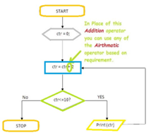

An operator in a programming language is a symbol that tells the compiler or interpreter to perform specific mathematical, relational or logical operation and produce final result.

+ Adds two operands - Subtracts second operand from the first * Multiplies both operands / Divides numerator by de-numerator % Modulus Operator and remainder of after an integer division ++ Increment operator, increases integer value by one -- Decrement operator, decreases integer value by one
== Checks if the values of two operands are equal or not, if yes then condition becomes true. != Checks if the values of two operands are equal or not, if values are not equal then condition becomes true. > Checks if the value of left operand is greater than the value of right operand, if yes then condition becomes true. < Checks if the value of left operand is less than the value of right operand, if yes then condition becomes true. >= Checks if the value of left operand is greater than or equal to the value of right operand, if yes then condition becomes true. <= Checks if the value of left operand is less than or equal to the value of right operand, if yes then condition becomes true.
&& Called Logical AND operator. If both the operands are non-zero, then condition becomes true. || Called Logical OR Operator. If any of the two operands is non-zero, then condition becomes true. ! Called Logical NOT Operator. Use to reverses the logical state of its operand. If a condition is true, then Logical NOT operator will make false.
& Binary AND Operator copies a bit to the result if it exists in both operands. | Binary OR Operator copies a bit if it exists in either operand. ^ Binary XOR Operator copies the bit if it is set in one operand but not both. ~ Binary Ones Complement Operator is unary and has the effect of 'flipping' bits. << Binary Left Shift Operator. The left operands value is moved left by the number of bits specified by the right operand. >> Binary Right Shift Operator. The left operands value is moved right by the number of bits specified by the right operand.
= Simple assignment operator, Assigns values from right side operands to left side operand += Add AND assignment operator, It adds right operand to the left operand and assign the result to left operand -= Subtract AND assignment operator, It subtracts right operand from the left operand and assign the result to left operand *= Multiply AND assignment operator, It multiplies right operand with the left operand and assign the result to left operand /= Divide AND assignment operator, It divides left operand with the right operand and assign the result to left operand %= Modulus AND assignment operator, It takes modulus using two operands and assign the result to left operand <<= Left shift AND assignment operator >>= Right shift AND assignment operator &= Bitwise AND assignment operator ^= bitwise exclusive OR and assignment operator |= bitwise inclusive OR and assignment operator